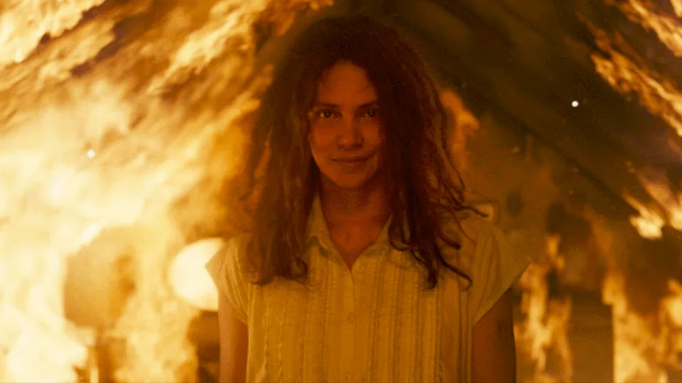

Após o sucesso de filmes como Um Lugar Silencioso e Bird Box, diversas outras produções de terror com famílias se protegendo de uma ameaça mortal surgiram. Entre elas, uma que deu espaço para uma reviravolta no conceito: Não Solte!Após o sucesso de filmes como Um Lugar Silencioso e Bird Box, diversas outras produções de terror com famílias se protegendo de uma ameaça mortal surgiram. Entre elas, uma que deu espaço para uma reviravolta no conceito: Não Solte!
O suspense psicológico de Alexandre Aja, estrelado por Halle Berry, teve uma temporada relativamente decepcionante nos cinemas, mal alcançando seu orçamento de US$ 20 milhões com a bilheteria. Agora, o longa espera ter uma segunda chance no streaming após estrear no Prime Video.
Em Não Solte!, uma ameaça sobrenatural desconhecida domina o mundo exterior, deixando a segurança de uma mãe, June (Halle Berry), e seus filhos gêmeos restrita à proteção de sua casa e ao vínculo inquebrantável da família. A mãe e seus filhos se mantêm ligados por cordas dentro de sua residência para protegerem-se do mal que assola o mundo lá fora. No entanto, quando um dos meninos começa a questionar a realidade do mal que os cercam, a frágil segurança da família começa a se desintegrar. A dúvida e o ceticismo provocam uma ruptura nos laços que mantêm a unidade familiar e desencadeiam uma luta desesperada pela sobrevivência. Não Solte! explora a tensão entre crença e dúvida em um cenário de terror psicológico, onde a única defesa contra o mal é a força de sua conexão familiar e a determinação de permanecer juntos.
O que fazer quando as crianças crescem e começam a questionar o sistema de crenças ou a criação que vivenciam quando há coisas do lado de fora que elas ainda desconhecem? Neste dilema, o filme toma uma direção completamente perversa.
Em vez de focar na perspectiva da personagem de Berry, são as crianças que guiam o público pela história, tornando-a em um conto de criação questionável e até mesmo de doutrinação perigosa, uma que não só priva da liberdade necessária para experimentar, mas também não prepara verdadeiramente para os perigos que assolam o mundo.
Embora tenha ideias incríveis, a execução acaba sendo um horror muito mais básico, com uma alegoria clara dominando o todo, mas não revelando coisas tão interessantes no processo. A técnica de Aja é menos brilhante do que em filmes anteriores, baseados em premissas mais básicas. Ainda que, infelizmente, o conceito seja melhor que o produto final, o longa ainda vale a pena ser visto no streaming.